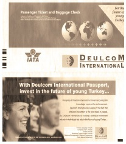

Türkiye’de de bu sertifikaların geçerli olabilmesi için Milli Eğitim Bakanlığı’ndan da onaylı olması gerekiyordu. Halim Güreş, işin Cenevre kısmını halletti, ben de Ankara kısmını. Talim ve Terbiye Kurulu bu iş için toplandı ve Türkiye’nin ilk Ticketing Uzmanlığı Kurs programı da böylelikle onaylanmış oldu. Dünyada IATA Eğitim Merkezleri arasında en fazla mezun veren ve mezunlarını en fazla işe yerleştiren şirket Deulcom oldu.
IATA ile onay aşamasında şu sorunu yaşadık: IATA’nın tüm şartlarını yerine getiriyorduk ancak en önemli şartları programı yürütecek IATA onaylı bir öğretim üyesinin olmasıydı. Haftalarca gazetelere ilan verdik, bütün yerli ve yabancı havayollarına başvurduk ve koskoca Türkiye’de bir adet IATA onaylı öğretim üyesi olmadığını acı bir şekilde öğrendik.
ABD vizesini aldım ve IATA’nın Miami’deki 15 gün süren, sadece ticketing uzmanlarını kabul ettikleri ve havayollarının personeli için düzenledikleri eğitmenlik kursuna gittim. Deulcom bir hava yolu değildi ama Cenevre bize bir istisna sağlamıştı. Kursu bitirmek için 70 puan gerekliydi ve eğer ben 90 ve üzerinde alırsam IATA Onaylı Öğretim Üyesi olarak onaylayacaklardı beni. Sanırım 25 yaşında olmam ve ticketing ile bir ilgim olmaması ve sınavın da zor olması dolayısıyla nasılsa 90 puan alabileceğimi düşünmüyorlardı.
Hâlbuki lise sonuncu sınıfta ofis boy olarak girdiğim seyahat acentesinde 1 hafta sonra uçak biletlerini ben kesmeye başlamıştım. Herhangi bir kursa falan gitmemiştim, ancak kitaplardan işi çözmüştüm. Biraz karışık ama dikkatli yapılırsa zor olmayan bir işti ticketing uzmanlığı.
Miami’deki programa dünya çapında 20 havayolundan 30 personel katılmıştı. Hepsi yıllardır bu işi yapıyorlardı ve çoğunun ana dili İngilizceydi.
Sonuç: Final sınavında 100 puan alan sadece bir kişi vardı. O da bendim.
IATA kurslarından milyonlarca dolar para kazandım.
Daha sonra IATA sisteminde bir eksiklik fark ettim. IATA programları dünya çapında veriyordu ama bilgisayarlı simülasyon kısmı eksikti. Bu kısmını yapabilecek San Francisco’dan Silikon Vadisi’nde bir programcıyla tanışmıştım Miami’de. Atladım, San Francisco’ya gittim, William ile bu programı nasıl geliştirebiliriz diye konuyu projelendirdik. Oradan Cenevre’ye geçtim ve IATA eğitim bölümünün tüm üst düzeyini bir araya getiren bir toplantı yaptım. IATA yöneticileri hepsi benim girişimciliğime hayrandılar.

Kendilerine San Francisco’dan William ile bir çalışma yapabileceklerini ve Deulcom’un Türkiye’de pilot ülke olarak bu CRS programlarını başlatmaya hazır olduğunu söyledim.
IATA’nın dünyadaki tüm merkezlerinde uygulayacağı CRS eğitim sisteminin de mimarlığını ben yapmış oldum böylece.
Ödül olarak IATA Biletlerinde Deulcom ve Türkiye’nin reklamları yayınlandı 1 yıl boyunca.
Kendini Sevdirirsen Bütün Kapılar Açılır
IATA’nın Singapur’daki eğitimlerini de tamamlayıp Türkiye’nin ilk IATA Onaylı Yer Hostesliği Öğretim Üyesi de oldum. Havalimanlarına da personel yetiştirmeye başladım. Özellikle yer hizmetleri şirketleri yoğun şekilde havalimanı yolcu hizmetleri görevlisi talep ediyorlardı. Böylelikle Türkiye’nin ilk Yer Hostesliği Kurslarını da başlatmış oldum. Sanki Milli Eğitim Bakanlığı’nın personeli gibiydim. Nerdeyse her hafta Ankara’da yeni bir kurs programı onaylatmaya çalışıyordum. Beni de sevmişlerdi, bürokratların bir zaafını iyi yakalamıştım. Neyi yapmak istediğinin pek önemi yoktu, önemli olan senin nasıl bir insan olduğundu. Karşılarında üniversitede bir öğrenci, belli ki cebinde parası yok – vardı da ben çaktırmıyordum – saygılı, efendi bir insan olarak beni sempatiyle karşılıyorlardı. Genel Müdürlüğün çaycısı, uzmanı, şube müdürü, daire başkanı, genel müdür yardımcısı ve genel müdürü ve hepsinin sekreterleri... Tanımayan yoktu beni. Ardından Talim ve Terbiye Kurulu Başkanlığı; orada da kendimi sevdirmiştim.
Kendimi sevdirmek dışında yapabileceğim başka da bir hamle yoktu. Torpilim yoktu, kimseyi tanımıyordum, üniversite öğrencisi olarak bürokrasinin kurallarından ise hiç haberim yoktu. Ancak olayı çözmüştüm; saygılı ol, sabret. Gerçi Milli Eğitim Bakanlığı’ndaki işlerde gerekli olan sabrın ölçüsü biraz fazla uç noktalardaydı, ama başka da çıkar yol yoktu. Milli Eğitim bürokrasisinden istediğin sonucu almak için peygamber sabrı cinsinden bir sabır cinsi gerekliydi.
İşin ilginç yanı, girişimci bir insan olarak hiçbir şeyi fazla beklemeye tahammül edemeyen ben, bürokrasiyi idare ederken hakikaten bir anda peygamber sabrı moduna geçebiliyordum. Bürokrasi yönetiminde çok başarılıydım. Pek çoğunun 2 yılda ancak çıkarabildikleri kararları ben 3 ay içinde çıkarabiliyordum.
NEVZAT AYAZ (Dönemin Milli Eğitim Bakanı): Dikkatimi çekti, şimdiye kadar bildiğimiz iki/üç kursun dışında yeni birtakım kurslar açılıyor ve bu kurslar aynı zamanda insanlara iş bulma imkânı sağlıyor. Merakıma mucip oldu, dedim ki kimdir bu kursları açan? Dediler ki genç bir işadamı bunu yapıyor. Merak ettim, tanıştık bu vesileyle. İşin enteresan tarafı Baybars Bey o sırada üniversitede okuyor, bir taraftan da bu işlere başlamış. Baybars Bey’in başlatmış olduğu bu sistem Türkiye’de yayıldıkça, birçok genç iş buldu. Hatta kendisi de bizzat kursiyerlerine iş buluyordu. Hakikaten, başlatmış olduğu bu kurs sistemi Türkiye’de bir öncü sistem olarak gelişti ve binlerce gence iş bulma imkânı yaratmış oldu.
Fakülte Boş Durmasın Hocam
Hocam Prof. Cem Alptekin o sıralarda Boğaziçi Üniversitesi Eğitim Fakültesi Dekanı seçildi. Okuldaki en büyük sıkıntılardan biri son sınıf öğrencilerinin stajlarıydı. Stajyer kabul edecek okul aranır, tarihler belirlenir, vs vs.
Kendisini dekanlık makamında ziyaret ettim, “Hocam, ben bir eğitim merkezi kurdum. Profesyonel Tur Operatörleri yetiştiriyorum seyahat acenteleri için. Ayrıca havayolları için hosteslik kursları da açtım. IATA’nın da Türkiye eğitim merkezi olduk. Hafta sonları bizim fakülte boş duruyor. Boğaziçi Üniversitesi’nden onaylı bir İngilizce Sertifika programı açarsak, bizim hostesler, tur operatörleri, ticketing uzmanları, yer hostesleri hem doğru dürüst bir İngilizce öğrenmiş olurlar, hem iş bulmaları kolaylaşır; hem de bizim son sınıf öğrencileri hafta sonları stajlarını bizim fakültede yapmış olurlar. Hafta sonları boş duran fakülte kapılarını halka açmış olur.”
Bir hafta sonra Cem Hoca beni ofisine çağırdı. “Rektör Bey’le görüştüm. Projen çok hoşumuza gitti. Sözleşmeyi getir, üniversite yönetim kuruluna sunalım.”
Böylelikle Deulcom, Boğaziçi Üniversitesi ile beraber sertifika programları açmaya başladı. Kursiyerler önce Boğaziçi Üniversitesi’nde hafta sonları Turizm İngilizcesi alıyorlar, sonra Deulcom’da kariyer kurslarına (hosteslik, tur operatörlüğü, ticketing, yer hostesliği) katılıyorlardı. Proje, Milli Eğitim Bakanlığı’nca da onaylandı ve Türkiye’nin ilk Turizm İngilizcesi Müfredatını da Boğaziçi Üniversitesi hazırlayarak, Talim ve Terbiye Kuruluna sundu.
Boğaziçi Üniversitesi ile bu proje yaklaşık 10 yıl sürdü. Bir devlet üniversitesinin özel bir kurumla yürüttüğü en uzun soluklu proje oldu diyebilirim. Boğaziçi Üniversitesi Yaşam Boyu Eğitim Merkezi’nin kuruluşuna esin kaynağı oldu bu proje. Üniversite kapılarını halka açtı, hafta sonları üniversitenin atıl kapasitesi değerlendi. Avrupa Dekanlar Birliği’nde “En Sosyal Fakülte” örneği olarak verildi okuduğum okul. Böylelikle okuluma karşı da görevimi yerine getirmiş oldum.
1987 yılında girdiğim Boğaziçi Üniversitesi’nden 1997 yılında mezun oldum. Kep giyme törenime Alara’yı yani kızımı da götürdüm. Okuldaki en güzel anılarımdan biri de, son yıllarda derse giren hocalarımızın bana “Baybars” diye mi yoksa “Baybars Bey” diye mi hitap edeceklerini bilememeleri idi. Hafta içi karşılarında öğrenciydim, hafta sonu ise onlar benim kurumumda eğitmen. Böyle geçti işte okul yıllarım...
Prof. CEM ALPTEKİN (Dönemin Boğaziçi Üniversitesi Eğitim Fakültesi Dekanı): “Burada bu kadar derslik var, ben özel bir kurs kurdum, buradaki bu atıl kapasiteyi neden değerlendirmiyorsunuz” dedi. Çok cazip geldi bu bana ve değerlendirdik. Ben bütçeye muhtaç bir dekanım o zamanlar, bu tür döner sermaye projeleri ile fakülte gelir elde etmeye başladı. Öğrencilerimize verilen eğitimin de kalitesi arttı. Türkiye’de pek çok özel kurs vardı ve bunlar İngilizce öğretiyordu. Baybars ise hedef kitleyi çok iyi seçmişti. Tur operatörleri, hostesler gibi Türkiye’de olmayan özel amaçlı İngilizce çığırını açmıştır. O konuda İngilizce, bu konuda İngilizce diye bir çığır açılmıştır ki bunda da gurur duyduğum öğrencim Baybars’ın imzası vardır.
Türkiye’den İlk Hostes İhracatı
Daha sonra da Türkiye’nin ilk İşe Yerleştirme Merkezi yönetmeliğini onaylattım Milli Eğitim Müdürlüğü'ne.
Boğaziçi Üniversitesi’nden İngilizce Sertifikası, Deulcom’dan Kariyer Sertifikası alan mezunlar; Boğaziçi Üniversitesi’nde yapılan Kep Giyme Töreni’nin ardından İşe Yerleştirme Merkezi çalışmalarına ücretsiz olarak katılıyorlardı. Yepyeni bir model geliştirmiştim Türkiye için. Bu model hem kursiyerler tarafından hem de sektörler tarafından çok yoğun talep görüyordu. Nerdeyse mezunların tamamı seyahat acentelerinde ve havayollarında, mezun olur olmaz işe başlıyorlardı. Ticketing ve Yer Hostesliği Kursu mezunları ise ayrıca IATA Sertifikası ile yurtdışında da iş bulabiliyorlardı.
Bir gün yabancı bir havayolu New York’tan faks gönderdi.